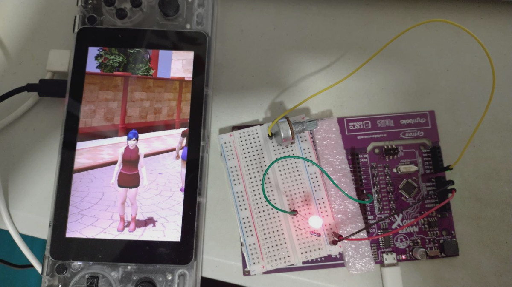

const int inputPin = A0;
const int lampPin = 9;
void setup() {
Serial.begin(115200);
pinMode(inputPin, INPUT);
pinMode(lampPin, OUTPUT);
}
#define CMPX(a, b) if (a > b) { t = a; a = b; b = t; }
void loop() {
#if 0
// might be noisy
unsigned val = analogRead(inputPin);
#else
// take median of 4 samples
unsigned t;
unsigned smp0 = analogRead(inputPin);
delay(2);
unsigned smp1 = analogRead(inputPin);
delay(2);
unsigned smp2 = analogRead(inputPin);
delay(2);
unsigned smp3 = analogRead(inputPin);
CMPX(smp0, smp2);
CMPX(smp1, smp3);
CMPX(smp0, smp1);
CMPX(smp2, smp3);
// CMPX(smp1, smp2);
unsigned val = (smp1 + smp2) >> 1;
#endif
analogWrite(lampPin, val >> 2);
Serial.println(val);
delay(40);
}
|